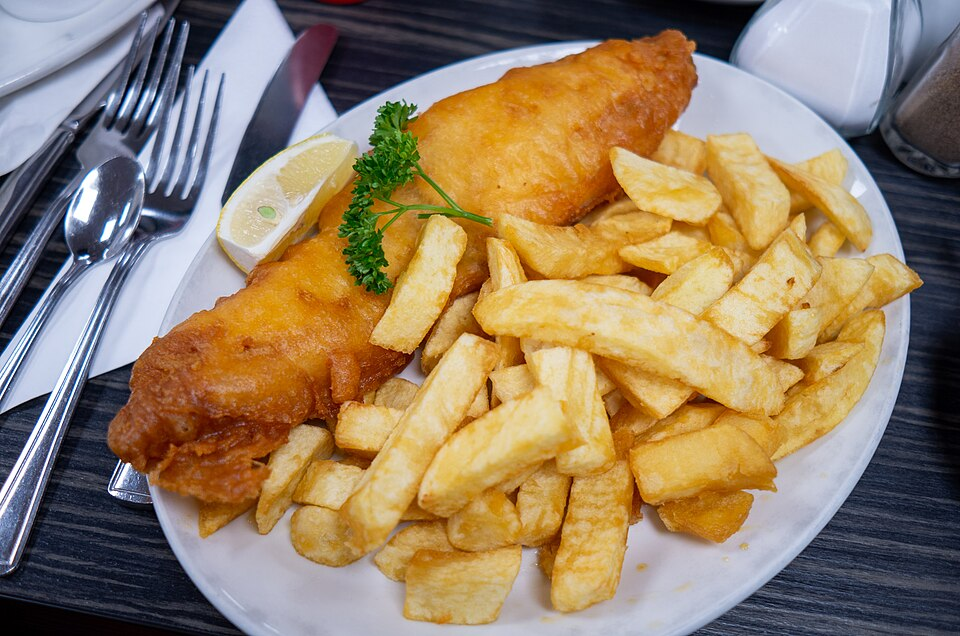

Home
Fish And Chips

Description
This is a recipe to cook a tradional British dish "fish and chips" which are delicious
Incredients
- Potatoes
- Fish Fillets
- All-purpose Flour
- Baking Powder
- milk, eggs, salt, black pepper
- Oil For Frying
Steps
- Peal and cut potatoes into strips
- Season potatoes, fish with salt and black pepper
- Mix flour with milk, baking powder, salt, eggs
- Heat oil to 180 degrees C
- Deep fry potatoes for 5 minutes
- Deep fish in the mixed-flour and fry for 10 minutes
- Serve and enjoy!